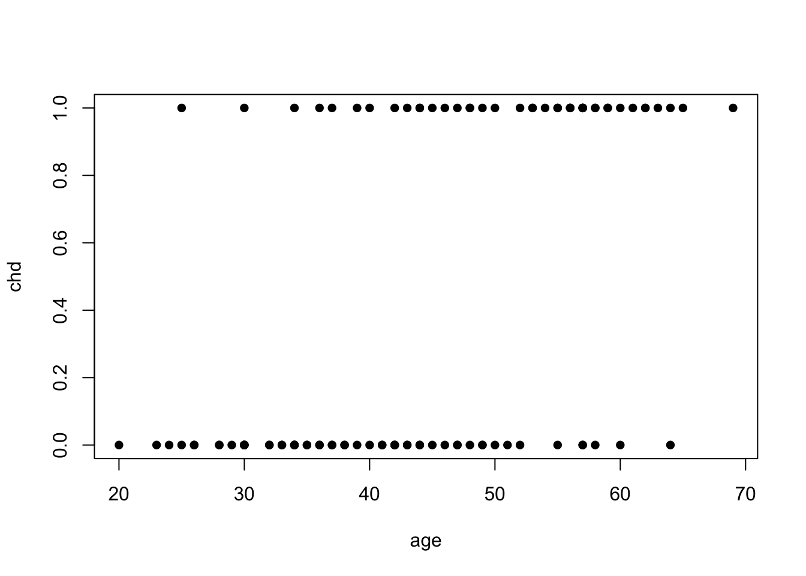
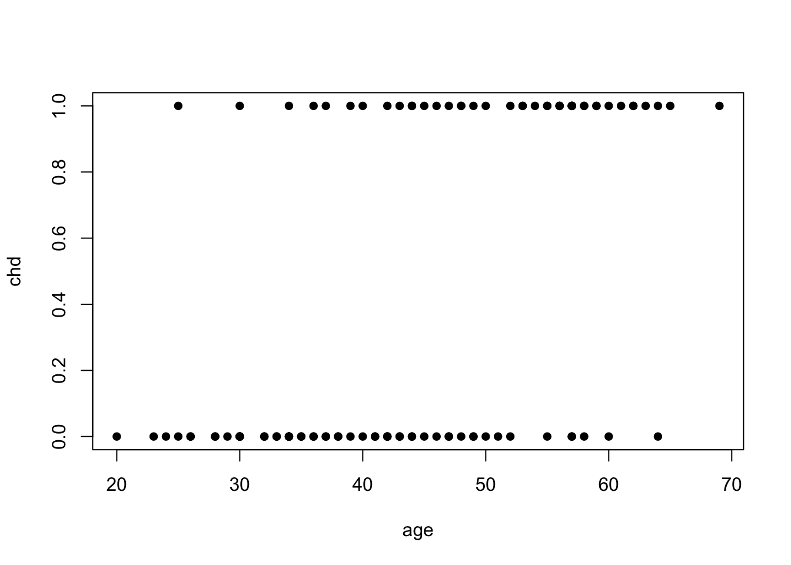
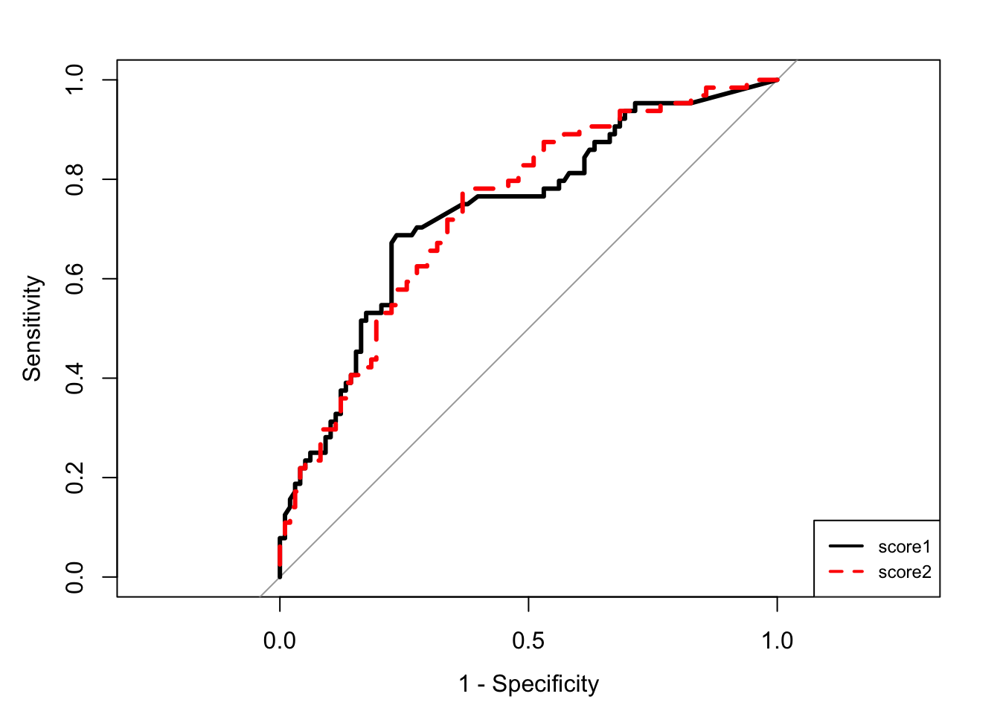
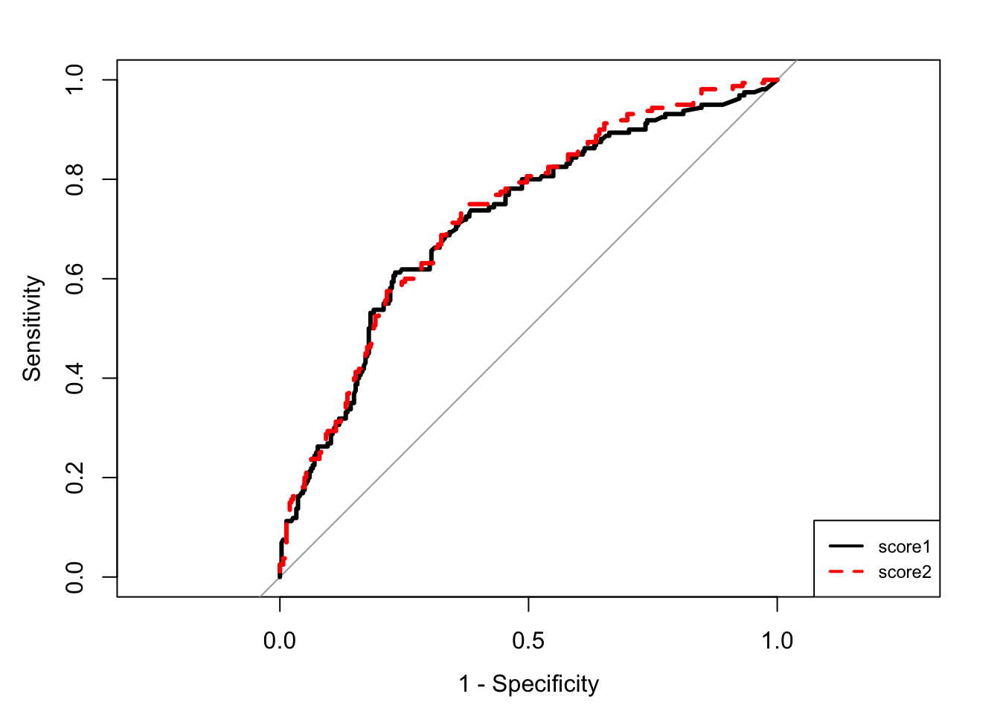

artere <- read.table("../donnees/artere.txt",header=T)
plot(chd~age,data=artere,pch=16)
artere <- read.table("../donnees/artere.txt",header=T)
plot(chd~age,data=artere,pch=16)
tab_freq <- table(artere$agrp,artere$chd)
freq <- tab_freq[,2]/apply(tab_freq,1,sum)
cbind(tab_freq,round(freq,3)) 0 1
1 9 1 0.100
2 13 2 0.133
3 9 3 0.250
4 10 5 0.333
5 7 6 0.462
6 3 5 0.625
7 4 13 0.765
8 2 8 0.800x.age <- c(19,29,34,39,44,49,54,59)
plot(x.age,c(freq),type="s",xlim=c(18,80),ylim=c(0,1),xlab="âge",ylab="freq")
lines(c(59,80),rep(freq[length(freq)],2))
x <- seq(15,80,by=0.01)
y <- exp(-5.31+0.11*x)/(1+exp(-5.31+0.11*x))
lines(x,y,lty=3)
glm(chd~age,data=artere,family=binomial)
Call: glm(formula = chd ~ age, family = binomial, data = artere)
Coefficients:
(Intercept) age
-5.3095 0.1109
Degrees of Freedom: 99 Total (i.e. Null); 98 Residual
Null Deviance: 136.7
Residual Deviance: 107.4 AIC: 111.4set.seed(12345)
X <- factor(sample(c("A","B","C"),100,replace=T))
#levels(X) <- c("A","B","C")
Y <- rep(0,100)
Y[X=="A"] <- rbinom(sum(X=="A"),1,0.9)
Y[X=="B"] <- rbinom(sum(X=="B"),1,0.1)
Y[X=="C"] <- rbinom(sum(X=="C"),1,0.9)
donnees <- data.frame(X,Y)
model <- glm(Y~.,data=donnees,family=binomial)
coef(model)(Intercept) XB XC
2.0794415 -3.6549779 0.3772942 model1 <- glm(Y~C(X,sum),data=donnees,family=binomial)
coef(model1)(Intercept) C(X, sum)1 C(X, sum)2
0.9868803 1.0925612 -2.5624167 library(bestglm)
data(SAheart)
new.SAheart <- SAheart[c(2,408,35),]
row.names(new.SAheart) <- NULL
SAheart <- SAheart[-c(2,408,35),]
model <- glm(chd~.,data=SAheart,family=binomial)
round(summary(model)$coefficients,4) Estimate Std. Error z value Pr(>|z|)
(Intercept) -6.0837 1.3141 -4.6294 0.0000
sbp 0.0065 0.0058 1.1268 0.2598
tobacco 0.0814 0.0269 3.0232 0.0025
ldl 0.1794 0.0600 2.9891 0.0028
adiposity 0.0184 0.0295 0.6224 0.5337
famhistPresent 0.9325 0.2291 4.0694 0.0000
typea 0.0392 0.0123 3.1845 0.0015
obesity -0.0637 0.0446 -1.4300 0.1527
alcohol 0.0002 0.0045 0.0346 0.9724
age 0.0439 0.0122 3.5923 0.0003confint.default(model) 2.5 % 97.5 %
(Intercept) -8.659355064 -3.507983650
sbp -0.004797560 0.017773140
tobacco 0.028628110 0.134174033
ldl 0.061770934 0.297043348
adiposity -0.039461469 0.076187468
famhistPresent 0.483354369 1.381572764
typea 0.015090098 0.063396115
obesity -0.151054913 0.023612482
alcohol -0.008639577 0.008950096
age 0.019931097 0.067793230n <- 1000
set.seed(123)
X1 <- sample(c("A","B","C"),n,replace=TRUE)
X2 <- rnorm(n)
X3 <- runif(n)
cl <- 1+0*(X1=="A")+1*(X1=="B")-3*(X1=="C")+2*X2
Y <- rbinom(n,1,exp(cl)/(1+exp(cl)))
donnees <- data.frame(X1,X2,X3,Y)m1 <- glm(Y~.,data=donnees,family=binomial)
library(car)
Anova(m1,type=3,test.statistic="Wald")Analysis of Deviance Table (Type III tests)
Response: Y
Df Chisq Pr(>Chisq)
(Intercept) 1 28.4698 9.517e-08 ***
X1 2 212.5061 < 2.2e-16 ***
X2 1 210.3902 < 2.2e-16 ***
X3 1 0.3096 0.5779
---
Signif. codes: 0 '***' 0.001 '**' 0.01 '*' 0.05 '.' 0.1 ' ' 1Anova(m1,type=3,test.statistic="LR")Analysis of Deviance Table (Type III tests)
Response: Y
LR Chisq Df Pr(>Chisq)
X1 376.74 2 <2e-16 ***
X2 417.66 1 <2e-16 ***
X3 0.31 1 0.5778
---
Signif. codes: 0 '***' 0.001 '**' 0.01 '*' 0.05 '.' 0.1 ' ' 1m01 <- glm(Y~X2+X3,data=donnees,family=binomial)
m02 <- glm(Y~X1+X3,data=donnees,family=binomial)
m03 <- glm(Y~X1+X2,data=donnees,family=binomial)
anova(m01,m1,test="LRT")Analysis of Deviance Table
Model 1: Y ~ X2 + X3
Model 2: Y ~ X1 + X2 + X3
Resid. Df Resid. Dev Df Deviance Pr(>Chi)
1 997 1109.67
2 995 732.93 2 376.74 < 2.2e-16 ***
---
Signif. codes: 0 '***' 0.001 '**' 0.01 '*' 0.05 '.' 0.1 ' ' 1anova(m02,m1,test="LRT")Analysis of Deviance Table
Model 1: Y ~ X1 + X3
Model 2: Y ~ X1 + X2 + X3
Resid. Df Resid. Dev Df Deviance Pr(>Chi)
1 996 1150.59
2 995 732.93 1 417.66 < 2.2e-16 ***
---
Signif. codes: 0 '***' 0.001 '**' 0.01 '*' 0.05 '.' 0.1 ' ' 1anova(m03,m1,test="LRT")Analysis of Deviance Table
Model 1: Y ~ X1 + X2
Model 2: Y ~ X1 + X2 + X3
Resid. Df Resid. Dev Df Deviance Pr(>Chi)
1 996 733.24
2 995 732.93 1 0.30976 0.5778library(aod)
wald.test(Sigma=vcov(m1),b=coef(m1),Terms=c(2,3))Wald test:
----------
Chi-squared test:
X2 = 212.5, df = 2, P(> X2) = 0.0model <- glm(chd~.,data=SAheart,family=binomial)new.SAheart <- SAheart[c(2,408,35),-10]
row.names(new.SAheart) <- NULL
new.SAheart sbp tobacco ldl adiposity famhist typea obesity alcohol age
1 118 0.08 3.48 32.28 Present 52 29.14 3.81 46
2 178 20.00 9.78 33.55 Absent 37 27.29 2.88 62
3 140 3.90 7.32 25.05 Absent 47 27.36 36.77 32predict(model, newdata=new.SAheart) 1 2 3
-0.9599837 1.5028033 -1.5743496 predict(model, newdata=new.SAheart,type="response") 1 2 3
0.2768815 0.8179922 0.1715972 prev <- predict(model,newdata=new.SAheart,type="link",se.fit = TRUE)
cl_inf <- prev$fit-qnorm(0.975)*prev$se.fit
cl_sup <- prev$fit+qnorm(0.975)*prev$se.fit
binf <- exp(cl_inf)/(1+exp(cl_inf))
bsup <- exp(cl_sup)/(1+exp(cl_sup))
data.frame(binf,bsup) binf bsup
1 0.1774323 0.4046504
2 0.6040315 0.9297800
3 0.1024782 0.2731474unique(artere[,"age"]) [1] 20 23 24 25 26 28 29 30 32 33 34 35 36 37 38 39 40 41 42 43 44 45 46 47 48
[26] 49 50 51 52 53 54 55 56 57 58 59 60 61 62 63 64 65 69sature <- aggregate(artere[,"chd"],by=list(artere$age),FUN=mean)
names(sature) <- c("age","p")
ndesign <- aggregate(artere[,"chd"],by=list(artere$age),FUN=length)
names(ndesign) <- c("age","n")
merge(sature,ndesign,by="age")[1:5,] age p n
1 20 0.0 1
2 23 0.0 1
3 24 0.0 1
4 25 0.5 2
5 26 0.0 2plot(chd~age,data=artere,pch=15+chd,col=chd+1)
lines(p~age,data=sature)
model <- glm(chd~.,data=SAheart,family=binomial)
library(generalhoslem)
logitgof(obs= SAheart$chd, exp = fitted(model))
Hosmer and Lemeshow test (binary model)
data: SAheart$chd, fitted(model)
X-squared = 6.6586, df = 8, p-value = 0.5739model <- glm(chd~.,data=SAheart,family=binomial)
prev_lin <- predict(model)
res_P <- residuals(model,type="pearson") #Pearson
res_PS <- rstandard(model,type="pearson") #Pearson standard
res_D <- residuals(model,type="deviance") #Deviance
res_DS <- rstandard(model,type="deviance") #Deviance standardpar(mfrow=c(2,2),pch=20,mai = c(0.1,0.15,0.1,0.1),mar=c(3,3,1,1),cex.axis=0.6,cex.lab=0.7,mgp=c(1.5,0.3,0),oma=c(1,0,0,0),tcl=-0.4)
plot(res_PS,cex=0.3,xlab="index",ylab="Pearson Standard")
plot(prev_lin,cex=0.3,res_PS,xlab="Prevision lineaire",ylab="Pearson Standard")
plot(res_DS,cex=0.3,xlab="index",ylab="Deviance Standard")
plot(prev_lin,cex=0.3,res_DS,xlab="Prevision lineaire",ylab="Deviance Standard")
model0 <- glm(chd~sbp+ldl,data=SAheart,family=binomial)
model1 <- glm(chd~sbp+ldl+famhist+alcohol,data=SAheart,family=binomial)
anova(model0,model1,test="LRT")Analysis of Deviance Table
Model 1: chd ~ sbp + ldl
Model 2: chd ~ sbp + ldl + famhist + alcohol
Resid. Df Resid. Dev Df Deviance Pr(>Chi)
1 456 548.18
2 454 522.64 2 25.545 2.838e-06 ***
---
Signif. codes: 0 '***' 0.001 '**' 0.01 '*' 0.05 '.' 0.1 ' ' 1data(SAheart)
mod_sel <- bestglm(SAheart,family=binomial,IC="BIC")
mod_sel$BestModels sbp tobacco ldl adiposity famhist typea obesity alcohol age Criterion
1 FALSE TRUE TRUE FALSE TRUE TRUE FALSE FALSE TRUE 506.3634
2 FALSE TRUE FALSE FALSE TRUE TRUE FALSE FALSE TRUE 509.2566
3 FALSE TRUE TRUE FALSE TRUE FALSE FALSE FALSE TRUE 509.9861
4 FALSE FALSE TRUE FALSE TRUE TRUE FALSE FALSE TRUE 510.5745
5 FALSE TRUE TRUE FALSE TRUE TRUE TRUE FALSE TRUE 510.7933mod_sel1 <- bestglm(SAheart,family=binomial,IC="AIC")
mod_sel1$BestModels sbp tobacco ldl adiposity famhist typea obesity alcohol age Criterion
1 FALSE TRUE TRUE FALSE TRUE TRUE FALSE FALSE TRUE 485.6856
2 FALSE TRUE TRUE FALSE TRUE TRUE TRUE FALSE TRUE 485.9799
3 TRUE TRUE TRUE FALSE TRUE TRUE TRUE FALSE TRUE 486.5490
4 TRUE TRUE TRUE FALSE TRUE TRUE FALSE FALSE TRUE 486.6548
5 FALSE TRUE TRUE TRUE TRUE TRUE FALSE FALSE TRUE 487.4435set.seed(1234)
ind.app <- sample(nrow(SAheart),300)
dapp <- SAheart[ind.app,]
dval <- SAheart[-ind.app,]
#Construction des modeles
model1 <- glm(chd~tobacco+famhist,data=dapp,family=binomial)
model2 <- glm(chd~tobacco+famhist+adiposity+alcohol,
data=dapp,family=binomial)
round(coef(model1),3) (Intercept) tobacco famhistPresent
-1.784 0.140 1.095 round(coef(model2),3) (Intercept) tobacco famhistPresent adiposity alcohol
-3.180 0.117 1.022 0.059 -0.002 prev1 <- round(predict(model1,newdata=dval,type="response"))
prev2 <- round(predict(model2,newdata=dval,type="response"))
mean(prev1!=dval$chd)[1] 0.3395062mean(prev2!=dval$chd)[1] 0.3395062set.seed(1245)
bloc <- sample(1:10,nrow(SAheart),replace=TRUE)
table(bloc)bloc
1 2 3 4 5 6 7 8 9 10
52 39 44 62 49 36 47 38 53 42 prev <- data.frame(matrix(0,nrow=nrow(SAheart),ncol=2))
names(prev) <- c("model1","model2")
for (k in 1:10){
ind.val <- bloc==k
dapp.k <- SAheart[!ind.val,]
dval.k <- SAheart[ind.val,]
model1 <- glm(chd~tobacco+famhist,data=dapp.k,family=binomial)
model2 <- glm(chd~tobacco+famhist+adiposity+alcohol,data=dapp.k,family=binomial)
prev[ind.val,1] <- round(predict(model1,newdata=dval.k,type="response"))
prev[ind.val,2] <- round(predict(model2,newdata=dval.k,type="response"))
}
apply(sweep(prev,1,SAheart$chd,FUN="!="),2,mean) model1 model2
0.3203463 0.3073593 score1 <- predict(model1,newdata=dval)
score2 <- predict(model2,newdata=dval)library(pROC)
R1 <- roc(dval$chd,score1)
R2 <- roc(dval$chd,score2)
plot(R1,lwd=3,legacy.axes=TRUE)
plot(R2,lwd=3,col="red",lty=2,legacy.axes=TRUE,add=TRUE)
couleur <- c("black","red")
legend("bottomright",legend=c("score1","score2"),col=couleur,lty=1:2,lwd=2,cex=0.75)
auc(R1)Area under the curve: 0.7356auc(R2)Area under the curve: 0.7372score <- data.frame(matrix(0,nrow=nrow(SAheart),ncol=2))
names(score) <- c("score1","score2")
for (k in 1:10){
ind.val <- bloc==k
dapp.k <- SAheart[!ind.val,]
dval.k <- SAheart[ind.val,]
model1 <- glm(chd~tobacco+famhist,data=dapp.k,family=binomial)
model2 <- glm(chd~tobacco+famhist+adiposity+alcohol,data=dapp.k,family=binomial)
score[ind.val,1] <- predict(model1,newdata=dval.k)
score[ind.val,2] <- predict(model2,newdata=dval.k)
}score$obs <- SAheart$chd
roc.cv <- roc(obs~score1+score2,data=score)
couleur <- c("black","red")
mapply(plot,roc.cv,col=couleur,lty=1:2,add=c(F,T),lwd=3,legacy.axes=TRUE) score1 score2
percent FALSE FALSE
sensitivities numeric,356 numeric,463
specificities numeric,356 numeric,463
thresholds numeric,356 numeric,463
direction "<" "<"
cases numeric,160 numeric,160
controls numeric,302 numeric,302
fun.sesp ? ?
auc 0.7159872 0.7271937
call expression expression
original.predictor numeric,462 numeric,462
original.response integer,462 integer,462
predictor numeric,462 numeric,462
response integer,462 integer,462
levels character,2 character,2
predictor.name "score1" "score2"
response.name "obs" "obs" legend("bottomright",legend=c("score1","score2"),col=couleur,lty=1:2,lwd=2,cex=0.75)
sort(round(unlist(lapply(roc.cv,auc)),3),decreasing=TRUE)score2 score1
0.727 0.716